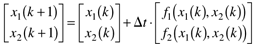
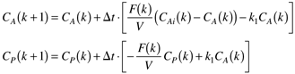
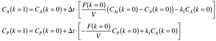
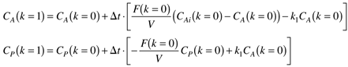
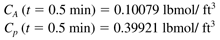

| [ Team LiB ] |
|
Appendix 2.2: Integrating Ordinary Differential EquationsThe Euler integration method often requires very small integration step sizes to obtain a desired level of accuracy. Note that x is a vector of n state variables at each time step. For example, if there are two states (two differential equations)  we have left the inputs and parameters out of the function variable list for convenience. An example is shown next. Example 2.2: An Isothermal Chemical Reactor, continuedConsider the ethylene glycol reactor problem in Example 2.2. We use k1 to represent the reaction rate constant, so that it is not confused with the time-step index. The Euler integration algorithm results in the following two equations, where k represents the time-step index.  For CA(0) = 0.1 and CP(0) = 0.4, and a space velocity (F/V) = 0.0816 min-1 we find, for the first time step,  Substituting the numerical values for an integration step size of 0.5 minutes, we find  resulting in the concentration values at t = 0.5 minutes  Values can be obtained at future times by continuing to march forward in time. MATLAB has a suite of routines for integrating differential equations. These are covered in Module 3. |
| [ Team LiB ] |
|